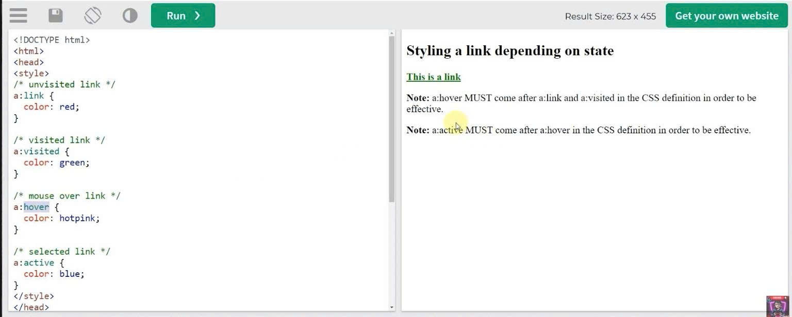
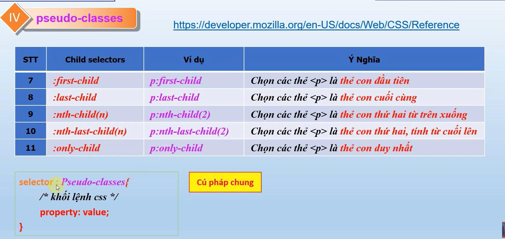

- Các loại pseudo class:
a : link => là link chưa nhấp chuột
vào, màu giữ nguyên
a : visited => là link đã nhấp
chuột vào, màu thay đổi
a : hover => là link khi rê chuột
vào, màu thay đổi
a : active => là link khi nhấp giữ
chuột vào, màu thay đổi
Ví dụ : (có thể áp dụng cho các thẻ p, h1, h2,.. )
web sample mẫu cho pseudo_class
- Sử dụng pseudo class :target để di
chuyển đến phần nào đó trong trang web.
Ví dụ:
Công nghệ AI (Artificial Intelligence) là công nghệ được quan tâm phát triển bậc nhất hiện nay, được ứng dụng trong nhiều lĩnh vực như nhận diện khuôn mặt, xử lí giọng nói, kĩ thuật ước tính đám đông,... đến các hệ thống an ninh, bảo mật hay hệ thống pháp luật, chính phủ. Theo dòng chảy của cuộc cách mạng công nghiệp 4.0, trí tuệ nhân tạo ngày càng được phổ biến và ứng dụng rộng rãi trong mọi lĩnh vực của cuộc sống. AI là công nghệ sử dụng kĩ thuật số có khả năng thực hiện những nhiệm vụ mà bình thường phải cần tới trí thông minh của con người. Đặc trưng của công nghệ AI là năng lực “tự học” của máy tính, có thể tự phán đoán, phân tích trước các dữ liệu mới mà không cần sự hỗ trợ của con người, đồng thời có khả năng xử lí dữ liệu với số lượng rất lớn ở tốc độ cao. Trí tuệ nhân tạo có khả năng tự thích nghi, tự học và tự phát triển, tụ đưa ra các lập luận để giải quyết vấn đề, có thể giao tiếp như con người,... Từ những dự đoán về ứng dụng công nghệ AI trong nhiều lĩnh vực khác nhau, các nhà nghiên cứu, doanh nghiệp, khỏi nghiệp và chính phủ có thể định hướng mục tiêu phát triển trong tương lai.
Sự ra đời của trí tuệ nhân tạo là một bước ngoặt lớn đối với sự phát triển của xã hội, đang dần trở thành một phần không thể thiếu trong cuộc sống và công việc của con người. Trí tuệ nhân tạo – AI không chỉ mang lại những tiện ích trực tiếp cho người sử dụng, mà còn mang lại nhiều lợi ích cho toàn thể xã hội. Nhờ có công nghệ AI hỗ trợ, phát hiện và ngăn chặn những rủi ro, nguy hại tiềm ẩn mà con người không phát hiện được cụ thể như: thiên tai, bão, sóng thần, động đất, núi lửa,… Trí tuệ nhân tạo ra đời giúp con người giải quyết các vấn đề khó khăn các lĩnh vực khác nhau: tự động hóa sản xuất, giáo dục, y tế,…. Trong công nghiệp, điển hình là robot chính là sản phẩm của trí tuệ nhân tạo, những robot trong các công xưởng, nhà máy sản xuất hỗ trợ giảm bớt sức lao động con người. Trí tuệ nhân tạo có khả năng dự đoán và phân tích tốt, vì vậy nên ứng dụng trí tuệ nhân tạo trong việc cá nhân hóa chúng sẽ giúp chúng ta tạo ra những sản phẩm, hay đưa ra những giải pháp phù hợp cho từng đối tượng riêng biệt, từ việc nó tìm hiểu đối tượng mà nó phục vụ. Điều này giúp chúng ta có thể tạo ra những sản phẩm tốt hơn với chi phí tốt hơn, tối ưu hóa giúp tiết kiệm thời gian và giảm hiệu ứng nhà kính đáng kể.
Tóm lại, trí tuệ nhân tạo (AI) mang lại nhiều lợi ích to lớn cho con người và xã hội. Tuy nhiên, bên cạnh những lợi ích đó, AI cũng tiềm ẩn nhiều rủi ro và thách thức mà con người cần phải đối mặt và giải quyết. Việc phát triển và ứng dụng trí tuệ nhân tạo cần được thực hiện một cách cẩn trọng, có trách nhiệm và đảm bảo rằng nó phục vụ lợi ích chung của con người và xã hội. Chúng ta cần tiếp tục nghiên cứu và phát triển công nghệ AI một cách bền vững, đồng thời xây dựng các chính sách và quy định phù hợp để đảm bảo rằng trí tuệ nhân tạo được sử dụng một cách an toàn, hiệu quả và có lợi cho tất cả mọi người.
- Gồm 5 loại child selector
- Gồm 3 loại khác nhau
p:nth-child (2): phần tử con thứ 2 từ trên xuốngp:nth-child(even): các phần tử con có số thứ tự chẵnp:nth-child(odd): các phần tử con có số thứ tự lẻp:nth-child(2n+1): các phần tử con có số thứ tự (2n+1) với n bắt đầu từ 0,1,2,3...NOTE: